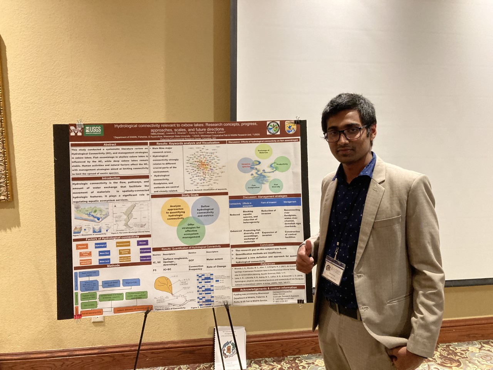
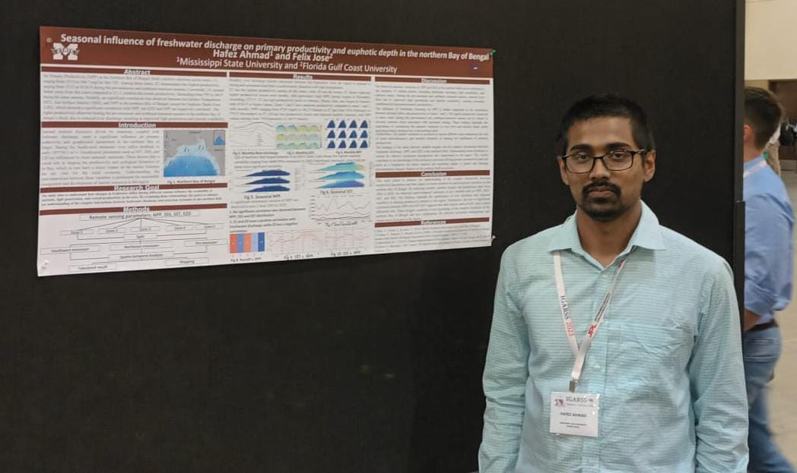
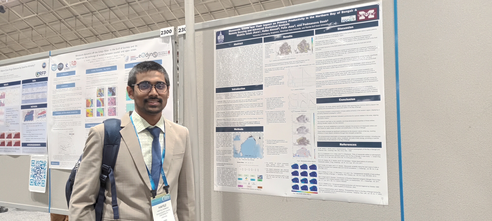
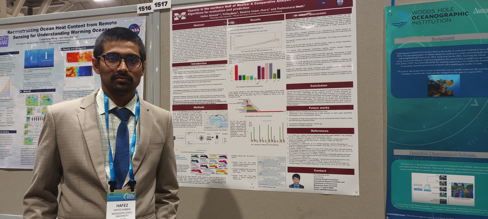
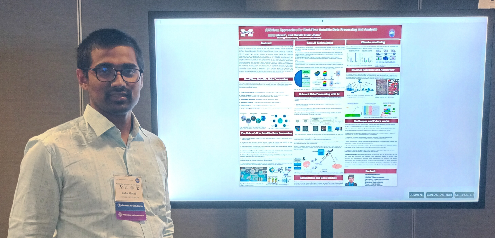
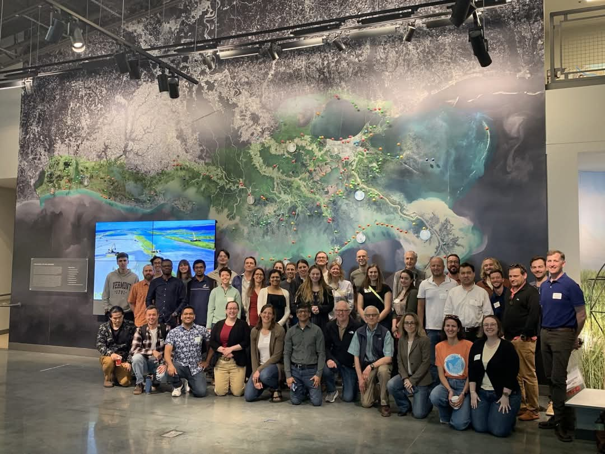
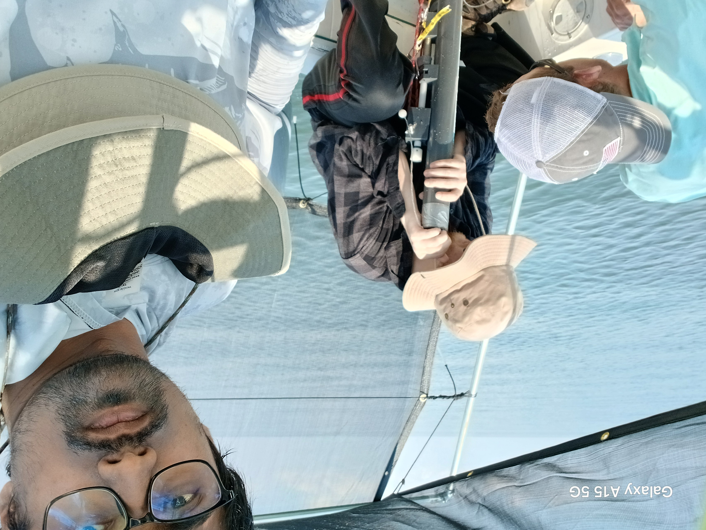

Research
My research integrates ** remote sensing, machine learning (ML), and hydrodynamic modeling** to monitor and understand coastal and aquatic environmental processes, with a strong focus on water quality dynamics. I primarily investigate parameters such as chlorophyll-a (Chl-a), particulate organic carbon (POC), total suspended matter (TSM), turbidity, colored dissolved organic matter (CDOM), and sea surface temperature (SST). By leveraging multi-source satellite data (e.g., Landsat, Sentinel-3 OLCI, MODIS, VIIRS & PACE) and field observations, I develop and validate ML models—including XGBoost, random forest, and convolutional neural networks—for accurate and scalable estimation of these indicators in complex coastal and estuarine systems.
A key objective of my work is to improve water quality monitoring in regions experiencing rapid environmental changes, such as the Gulf of Mexico/ AmeriCA and the Bay of Bengal. I analyze long-term trends and seasonal variability of key parameters and explore how oceanographic drivers, including wind, currents, and temperature anomalies, influence biogeochemical dynamics. I also integrate Google Earth Engine and cloud computing platforms to enhance large-scale, time-efficient analyses.
Hydrodynamic modeling is another cornerstone of my research. I use tools like the Environmental Fluid Dynamics Code (EFDC) to simulate water circulation, sediment transport, and hypoxic zone formation. I combine these simulations with field data, such as ADCP measurements, to model how physical processes influence the spatial distribution of water quality parameters. My research includes examining how river discharge, bathymetry, and land use changes affect hydrological connectivity and water column mixing.
Through an interdisciplinary approach, I aim to support early warning systems for harmful algal blooms, sediment resuspension events, and nutrient pollution hotspots. Ultimately, my work contributes to evidence-based decision-making in water resource management, marine conservation, and policy development under changing environmental and climatic conditions.
Publications
- Islam, M. S., Dash, P., Liles, J. P., Ahmad, H., Nur, A. M., Panda, R. M., … & Moorhead, R. J. (2025). Spatiotemporal dynamics of cyanobacterial blooms: Integrating machine learning and feature selection techniques with uncrewed aircraft systems and autonomous surface vessel data. Journal of Environmental Management, 381, 124878. https://doi.org/10.1016/j.jenvman.2025.124878
- Ahmad, H., F. Jose, Dash, P., D. J. Shoemaker, and Jhara, S. I. (2025). Machine Learning-Based Estimation of Chlorophyll-a in the Mississippi Sound using Landsat and Ocean Optics Data. Environmental Earth Sciences.https://link.springer.com/article/10.1007/s12665-025-12191-7
- Ahmad, H., Miranda, L. E., Corey G. Dunn, Colvin, M., and Dash, P. (2025). Confluence of time and space: An innovation for quantifying dynamics of hydrologic floodplain connectivity with remote sensing and GIS. River Research and Applications. doi.org/10.1002/RRA.4426.
- Frank Juma Ong’ondo, Shrinidhi Ambinakudige, Philista Adhiambo Malaki, Peter Njoroge, Hafez Ahmad. (2025). Using geographic information systems and remote sensing techniques to classify land cover types and predict grassland bird abundance and distribution in Nairobi National Park, Kenya. doi.org/10.1016/j.ijgeop.2025.02.003.
- Islam, M. S., Dash, P., Nur, A., Ahmad, H., Panda, R. M., Wolfe, J. S., Turnage, G., Hathcock, L., Chesser, G. D., and Moorhead, R. J. (2024). Estimation of Chlorophyll-a in Uncrewed Aircraft Systems Imagery using Autonomous Surface Vessel data by employing Machine Learning Algorithms and Innovative Feature Selection Techniques. Ecological Informatics, 85, 102954.https://www.sciencedirect.com/science/article/pii/S1574954124004965
- Ahmad, H., Jhara, S. I. (2024). Mapping the Dynamics of Particulate Organic Carbon: Satellite Observations of Coastal to Shelf Variability in the Northeastern Gulf of Mexico. Ocean Science Journal. doi.org/10.1007/s12601-024-00203-9.
- Ahmad, H., Dash, P., Panda, R. M. (2024). Integrating machine learning and remote sensing for long-term monitoring of chlorophyll-a in Chilika Lagoon, India. Environmental Monitoring and Assessment. doi.org/10.1007/s10661-024-13463-8.
- Ahmad, H., Miranda, L. E., Dunn, C. G., Boudreau, M. R., Colvin, M. E. (2024). Connectivity patterns between floodplain lakes and neighboring streams in the historical floodplain of the Lower Mississippi River. Ecological Indicators. doi.org/10.1016/j.ecolind.2024.112808.
- Ahmad, H., F. Jose, and D. J. Shoemaker. (2024). Mapping, Dynamics, and Future Change Analysis of Sundarbans Delta using Cellular Automata and Artificial Neural Network Modeling. IEEE Journal of Selected Topics in Applied Earth Observations and Remote Sensing. doi: 10.1109/JSTARS.2024.3367116.
- Ahmad, Hafez. “Hydrologic connectivity between oxbow lakes and rivers within the Lower Mississippi Alluvial Valley” (2024). Theses and Dissertations, 6068. https://scholarsjunction.msstate.edu/td/6068
- Ahmad, H., Abdallah, M., Jose, F., Elzain, et al. (2023). Evaluation and mapping of predicted future land use changes using hybrid models in a coastal area. Ecological Informatics, 102324. doi.org/10.1016/j.ecoinf.2023.102324.
- Ahmad Hafez, Jose Felix, Bhuyan Md. Simul, Islam Md. Nazrul, Dash Padmanava. (2024). Seasonal influence of freshwater discharge on spatio-temporal variations in primary productivity, sea surface temperature, and euphotic zone depth in the northern Bay of Bengal. Acta Oceanologica Sinica., doi: 10.1007/s13131-023-2254-y
- Ahmad, H., Jose, F., Islam, M. S., & Jhara, S. I. (2023). Green Energy, Blue Economy: Integrating Renewable Energy and Sustainable Development for Bangladesh. Marine Technology Society Journal, 57(4), 52-69.https://www.ingentaconnect.com/content/mts/mtsj/2023/00000057/00000004/art00007
- Ahmad, H. (2019). Machine learning applications in oceanography. Aquatic Research, 2(3), 161-169. doi.org/10.3153/AR19014.
- Ahmad, H., Jhara, S.I. (2019). Present status of impacts of climate change and adaptations in Bangladesh coastal areas. In Social Change A journal for social development (Vol. 9, pp. 71–81). Young Power in Social Action.
- Ahmad, H. (2019) ‘Bangladesh Coastal Zone Management Status and Future Trends’, Journal of Coastal Zone Management, 22(1), pp. 1–7. doi: 10.4172/2473-3350.1000466.
Submitted Manuscripts
- Ahmad, H., Jose, Felix, Dash, P. Bhuyan, Md. Simul. (2025). Predictive Analysis of Land Use Modeling for Chittagong, Bangladesh Utilizing Remote Sensing and Machine Learning. Remote Sensing in Earth Systems Sciences.
- Ahmad, H., Jose, Felix, MM Nabi; Shakila Islam Jhara, Frank Juma Ong’ondo (2025). Land Use and Land Cover Dynamics of Irrawaddy Delta: Remote Sensing Analysis and Future Projection. Remote Sensing Applications: Society and Environment.
- Ahmad, H. (2025). River Discharge Dynamics: Temporal and Spatial Effects of River Discharge on Chlorophyll-a and Variability in the Northern Gulf of Mexico. Estuarine, Coastal and Shelf Science.
- Ahmad, H, F. Jose, D. J. Shoemaker, Dash, P and Jhara, S. I. (2025). Hypoxia in the northern and eastern Gulf of Mexico: A Machine Learning Approach for Evaluation and Prediction. Regional Studies in Marine Science.
- Ahmad, H, et al. (2025). Long-Term Trends and Seasonal Drivers of Water Quality in US Southern Coastal National Reserves: Unraveling the Impacts of Climate Change. Estuarine, Coastal and Shelf Science.
- Ahmad, H, et al. (2025). Estimating algal bloom and trophic status in Lake Okeechobee, Florida using VIIRS and OCI/PACE satellite imagery and Machine learning.
- Ahmad, H, Miranda, LE, Dunn, C. G, and Colvin, Mike. (2025). Hydrologic connectivity in floodplain systems: A review. Freshwater.
- Ahmad, H, Jose, Felix, Dash, P. (2025). Mesoscale Eddies and their Impact on Primary Productivity in the Bay of Bengal. Journal of Environmental and Earth Sciences.
- Ahmad, H, et al. (2025). Use and Land Cover Dynamics of Irrawaddy Delta: Remote Sensing Analysis and Future Projection. Remote Sensing Applications: Society and Environment.
- Frank Juma Ong’ondo, Shrinidhi Ambinakudige, Philista Adhiambo Malaki; Hafez Ahmad; Qingmin Meng; Kuria Antony. (2025). Land cover change and future projection analysis for Nairobi National Park and adjacent landscapes, using GIS, remote sensing, and cellular automata-artificial neural network. Remote Sensing Applications: Society and Environment.
Books / Chapters
- Elisabeth Fahrni Mansur, G M Masum Billah, Nadim Parves, Robiul Kauser, Mohammad Shamsuddoha, Ashik Jahan Galib, Naim Khandakar, Hafez Ahmad, Rasel Mia, Md. Arafat Rahman Khan and Brian D. Smith (2022). Sharks and Rays of Bangladesh: A guide to identifying protected species and their commonly traded parts. Bangladesh Forest Department and Wildlife Conservation Society, Bangladesh.
Proceedings and Conference Articles (* in prep/submitted)
- Ahmad, H., Jose, Felix, Dash, P and Jhara, S. (2024). Integrating Remote Sensing and Field Survey Data: Machine Learning Approaches for Hypoxia Evaluation and Prediction in the Northern Gulf of Mexico. IGARSS 2024 - 2024 IEEE International Geoscience and Remote Sensing Symposium.
- Md. Mazaharul Islam, Hafez Ahmad, Mohammad Saydul Islam Sarkar, Jose Felix. Sustainable Coastal Zone Management in Bangladesh: A Blue Economy Perspective through Remote Sensing data. Taiwan International Conference on Ocean Governance 2023 (TICOG 2023).
- H. Ahmad and F. Jose, “Mapping, Dynamics, and Future Change Analysis of Sundarbans delta using Cellular Automata and Artificial Neural Network Modeling,” IGARSS 2023 - 2023 IEEE International Geoscience and Remote Sensing Symposium, Pasadena, CA, USA, 2023, pp. 2600-2602, doi: 10.1109/IGARSS52108.2023.10282057.
- Md. Mazaharul Islam, Hafez Ahmad, Mohammad Saydul Islam Sarkar, Jose Felix. A comprehensive framework for harnessing blue economy benefits in Bangladesh’s central coastal zone. 9th International Conference on Water and Flood Management-ICWFM 2023.
- H. Ahmad and F. Jose, “Seasonal influence of freshwater discharge on primary productivity and euphotic depth in the northern Bay of Bengal,” IGARSS 2023 - 2023 IEEE International Geoscience and Remote Sensing Symposium, Pasadena, CA, USA, 2023, pp. 4023-4024, doi: 10.1109/IGARSS52108.2023.10281755.
Abstracts/ Posters (* in prep/submitted)
- Devin M. Raburn, Hafez Ahmad, Patrick F. Allison Jr., Susan B. Adams, Zanethia C. Barnett4, Ryan C. Garrick, Kenneth A. Sterling5, Sara Cathey, Michael E. Colvin, and Corey G. Dun. Hidden in plain sight: high-resolution stream networks reveal habitats for petitioned burrowing crayfishes. 155th Annual Meeting of the American Fisheries Society, 2025. San Antonio, Texas.
- Ahmad, H., & Dash, P. Long-Term Water Quality Trends and Seasonal Drivers in the Western Mississippi Sound: A Remote Sensing and Machine Learning Approach. 14th International Symposium on Biogeochemistry of Wetland & Aquatic Systems June 1-5, 2025, at the Hilton Baton Rouge Capitol Center, Baton Rouge, LA.
- Ahmad, H., & Dash, P. Remote Sensing and Machine Learning for Long-Term Water Quality Monitoring in the Western Mississippi Sound. Spring 2025 Graduate Research Symposium, Feb 15, 2025, at the Old Mian Academic Center, Starkville, MS.
- Ahmad, H., & Dash, P Remote Sensing of Water Quality Parameters over Western Mississippi Sound by Using Sentinel-3 OLCI and Machine Learning. ASLO 2025 Aquatic Sciences Meeting 26-31 March 2025 in Charlotte, North Carolina, USA.
- Ahmad, H., & Dash, P. Modeling Hypoxia in the Gulf of Mexico: A Machine Learning Approach with Remote Sensing and Field Data. Fall 2024 Graduate Research Symposium.
- Ahmad, H., & Dash, P. Remote Sensing of Water Quality Parameters over Western Mississippi Sound by Using Sentinel-3 OLCI and Machine Learning. The Mississippi 2024 Water Resources Conference.
- Ahmad, H., Jhara, S.I. AI-Driven Approaches for Real-Time Satellite Data Processing and Analysis. NASA Accelerating Informatics for Earth Science, 2024.
- Ahmad, H., Jose, F., Jhara, S. I & Dash, P Predicting Hypoxia in the Northern and Eastern Gulf of Mexico: A Machine Learning Approach Combining Remote Sensing and Field Data. Mississippi Academy of Sciences Summer Science and Engineering Symposium, 2024.
- Ahmad, H., Jose, F., Jhara, S. I & Dash, P. Mesoscale Eddies and their Impact on Primary Productivity in the Northern Bay of Bengal. Ocean Sciences Meeting 2024 – AGU, New Orleans, Louisiana.
- Ahmad, H., Jose, F., Jhara, S. I & Dash, P. Hypoxia in the Northern Gulf of Mexico: A Comparative Analysis of Machine Learning Algorithms for Evaluation and Prediction. Ocean Sciences Meeting 2024 – AGU, New Orleans, Louisiana.
- Ahmad, H., Jose, F., Jhara, S. I & Dash, P. Eddy-driven Chlorophyll Concentration Variability in the Andaman Sea. Ocean Sciences Meeting 2024 – AGU, New Orleans, Louisiana.
- Islam, M.S, Dash, P, Nur, A, Ahmad, H., Panda, R., Wolfe, J.S, Hathcock, Lee., Chesser, G. D., & Moorhead, R. Estimation of Chlorophyll-a in Uncrewed Aircraft Systems Imagery using Autonomous Surface Vessel data by employing Machine Learning Algorithms and Innovative Feature Selection Approaches. Ocean Sciences Meeting 2024 – AGU, New Orleans, Louisiana.
- Ahmad, H., Jose, F., Islam, M. S., & Jhara, S. I. Sustainable Development through the Synergy of Green Energy and Blue Economy in Bangladesh. 1st International Conference on Oceanographic 2024 (ICO-2024), BORI, Cox’s Bazar, Bangladesh.
- Hafez Ahmad, L. E. Miranda, Corey G. Dunn, Mike Colvin. Hydrological connectivity patterns in oxbow lakes of the Lower Mississippi Alluvial Valley. 153rd Annual Meeting of the American Fisheries Society, 2023.
- Devin. M. Raburn, Hafez Ahmad, Patrick Allison Jr., Susan B. Adams, Zanethia C. Barnett, Ryan Garrick, Kenneth A. Sterling, Sara Cathey, Michael E. Colvin, and Corey G. Dunn. Uncharted waters: high-resolution stream networks reveal hidden habitats for petitioned headwater crayfishes. Southern Division of the American Fisheries Society, 2023.
- Hafez Ahmad, L. E. Miranda, Corey G. Dunn, Mike Colvin. A systematic review on hydrological connectivity relevant to oxbow lakes: Research concepts, progress, approaches, scales, and future directions. 49th Annual Meeting of the MSAFS, 2023.
- Hafez Ahmad, L. E. Miranda, Corey G. Dunn, Mike Colvin. Assessing the Relationship between Hydrological Connectivity and Fish Assemblage in the Mississippi Alluvial Valley Floodplain. MSU Graduate Research Symposium, 2023.
- Hafez Ahmad and Felix Jose. Spatiotemporal variability of SST and primary productivity in the Bay of Bengal. STEM Undergraduate Research and Internship Symposium, 2019, Florida Gulf Coast University, Florida, USA.
- Kelly Chase, Hafez Ahmad and James Douglass. Are invertebrates in tape grass beds as diverse and productive as those in seagrass beds? STEM Undergraduate Research and Internship Symposium, 2019, Florida Gulf Coast University, Florida, USA.
- Hafez Ahmad, Shakila Islam Jhara, and Md. Wahidul Alam. Collaborative approach and role of the marine spatial planning to support integrated coastal zone management in Bangladesh. 8th International Conference on Water and Flood Management (ICWFM 2021), 29-31 March 2021, Dhaka, Bangladesh.
Reviewers (N= Number of Article reviewed by me)
- Remote Sensing Applications: Society and Environment (7)
- Journal of Coastal Research (5)
- Environmental Monitoring and Assessment (2)
- Scientific Reports (1)
- Remote Sensing of Environment (1)
- Journal of Applied Life Sciences and Environment (1)
- Environmental Research (1)
- Journal of hydrology (1)
- Estuarine, Coastal and Shelf Science (1)
- Geoscience Frontiers (1)
- Discover Environment (1)
- Mitigation and Adaptation Strategies for Global Change (2)
- Frontiers in Marine Science (1)
- Journal of Applied Life Sciences and Environment (1)
- Marine pollution bulletin (1)
- Thalassas: An International Journal of Marine Sciences (1)
- Frontiers In Freshwater Science (1)
- B P International Book publisher (2)
- Asian Research Journal of Arts & Social Sciences (1)
Some Presentations photos
American Fisheries Society (AFS) Annual Meeting: A snapshot from the 2023 AFS Annual Meeting held in Grand Rapids, Michigan. 
IGARSS 2023 Poster Presentation: Poster presentation at the IGARSS 2023 conference. 
Ocean Science Conference 2024, New Orleans, LA: A moment captured during the Ocean Science Conference 2024. 
Ocean Science Conference 2024, New Orleans, LA: Another highlight from the Ocean Science Conference 2024. 
NASA Collaboration: Accelerating Informatics for Earth Science: Collaboration with NASA on Earth Science Informatics in 2024. 
** ASLO Conference, 2025 **

** Leaky Deltas, 2025 ** 
** Field Trip in Mississippi Sound**

** Field Trip mostly across Mississippi Sound** 
CERTIFICATIONS, PROFESSIONAL TRAININGS, AND WORKSHOPS
- Leaky deltas: sources or sinks in the global carbon cycle - 2025
- Introduction to Plankton, Aerosol, Cloud, Ocean Ecosystem (PACE) Hyperspectral Observations for Water Quality Monitoring- 2024
- Anaconda Python for Data Science Professional Certificate- 2024
- NASA PACE satellite hackathon – 2024, August (selected for final participation)
- Delft3D modeling, 2024 by institute for water education.
- Large Scale Applications of Machine Learning using Remote Sensing for Building Agriculture Solutions by NASA Applied Remote Sensing Training Program- 2024
- AGU Ocean Science Meeting-2024
- Certification- Using Python for Automation-2024
- NASA PACE Applications workshop-2023
- Fundamentals of Machine Learning for Earth Science-2023
- Google Data Analytics Certificate, Google,2023
- PRIMER 7: Multivariate Analysis in Ecology & Other Sciences-2022
- Geographic Information Systems (GIS) Specialization- 2022
- Applied Data Science with Python Specialization, Coursera- 2022
- Machine Learning A-Z™: Hands-On Python & R in Data Science, Udemy- 2020
- Python for Data Science and Machine Learning Bootcamp, Udemy- 2020
- Statistics for Data Science and Business Analysis, Udemy- 2020
- TensorFlow Developer Certificate in 2022: Zero to Mastery, Udemy- 2020
- Big Data Analytics with GIS, Udemy- 2020
- ArcGIS Desktop for Spatial Analysis: Go from Basic to Pro, Udemy- 2020
- Object-based Image Analysis & Classification in QGIS ArcGIS, Udemy- 2020
- Complete Basic GIS Tasks - ArcGIS - Erdas - Remote Sensing, Udemy- 2020
- Taming Big Data with Apache Spark and Python - Hands-On! Udemy- 2020
- Pyspark & AWS: Master Big Data with Pyspark and AWS, Udemy- 2020
- “SDGs for Youth: My Goal, My Responsibility” by EMK Center, Dhaka-2019
- “Climate Change in Practice and becoming global citizens for a sustainable society” by the Asian pacific center of Education for international understanding and Ban Ki-moon center-2020.
- Geospatial and Environmental Analysis by University of California, Davis -2020
- Julia Scientific Programming by University of Cape Town -2020
- Introduction to GIS: Manipulating and Mapping Geospatial Data in R -2020
- Learned Advanced Python Concepts -2020
- R programming hands-on specialization for Data Science -2020
- Become an expert with ESRI’s GIS software ArcGIS Desktop -2020
- Machine Learning Bootcamp™: Hand-On Python in Data Science -2020
- Ecology: Ecosystem Dynamics and Conservation -2020
- Large Marine Ecosystems: Assessment and Management -2020
- Data Analysis with Python -2020
- R Programming -2020
- ARSET - Species Distribution Modeling with Remote Sensing-2020
- Preparing to Manage Human Resources -2020
- Geospatial Applications for Disaster Risk Management” -2020
- Fishery Oceanography for Future Professionals by ESSO-INCOIS, India-2020
- Participation in “Social Leadership Hackathon” -2019
- Training on “First Aid” in American Corner, Chittagong, Bangladesh-2019
- Training on “Geospatial Regression and Hotspot analysis” at the University of Dhaka, Bangladesh-2018
- Training on Volunteerism -2015, Chittagong, Bangladesh.
- Workshops on the “Blue Economy”- 2015.